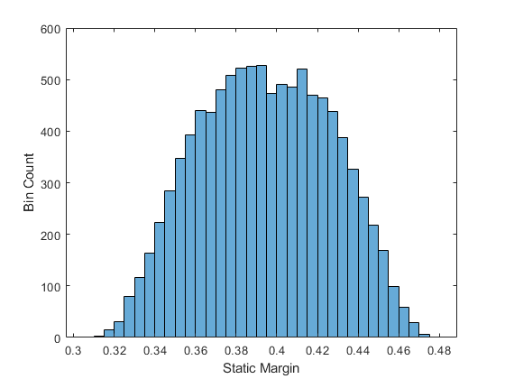
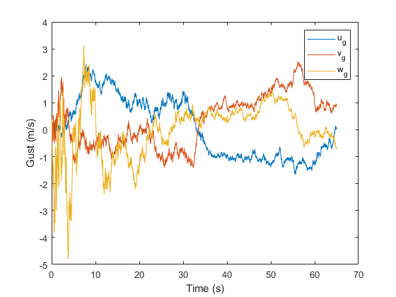
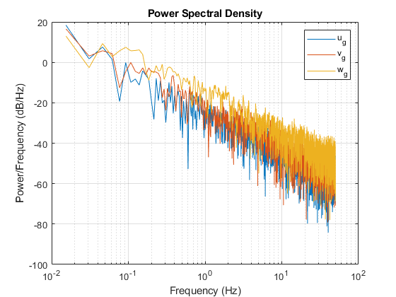
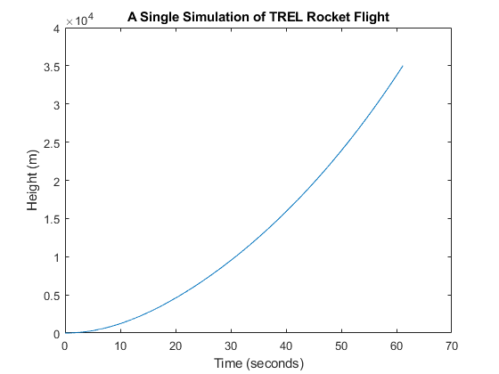
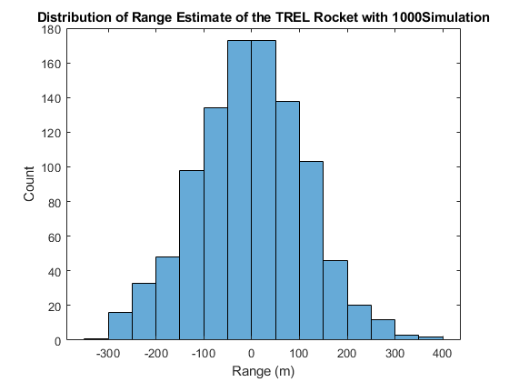
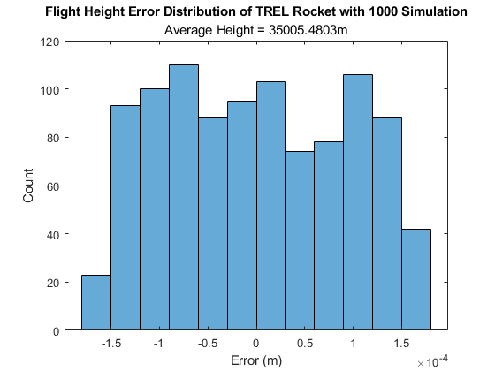

Contents
close all; clear all; clc
Determine CG and CP
N_sample = 10000;
static_margins = zeros([N_sample,1]);
for i = 1:N_sample
[cg, mass_total, moment] = cg_sample();
[cp, C_N_alpha, S_ref, cp_moment] = cp_sample();
static_margins(i) = (cg-cp)/0.4;
C_N_q = C_N_alpha*(cg-cp);
C_M_alpha = -C_N_alpha*(cg-cp);
C_M_q = -(C_N_alpha*cp_moment +2*C_N_alpha*cp*cg-C_N_alpha*cg.^2);
end
figure(1)
clf
mean(static_margins)
std(static_margins)
histogram(static_margins)
xlabel('Static Margin')
ylabel('Bin Count')
ans =
0.3945
ans =
0.0323

Wind Model
N_timestep = 6500;
dt = 0.01;
accel = 1;
gust_state = [0,0,0]';
gustintensity = 1;
gustdata = zeros(3,N_timestep);
V = 0;
h = 0;
for t = 1:N_timestep
gust_state = dryden_gust_sample(gust_state,V,h,gustintensity,dt);
gustdata(:,t) = gust_state;
V = V + accel*dt;
h = h + V*dt + 0.5*accel*dt.^2;
end
figure(2)
clf
plot((1:N_timestep)*dt, gustdata(1:3,:)' )
legend('u_g','v_g','w_g')
xlabel('Time (s)')
ylabel('Gust (m/s)')
fs = 1/(dt);
xdft = fft(gustdata(1,:)');
xdft = xdft(1:N_timestep/2+1);
psdx = (1/(fs*N_timestep)) * abs(xdft).^2;
psdx(2:end-1) = 2*psdx(2:end-1);
freq = 0:fs/N_timestep:fs/2;
figure(3)
clf
semilogx(freq,10*log10(psdx) )
grid on
hold on
title("Power Spectral Density")
xlabel("Frequency (Hz)")
ylabel("Power/Frequency (dB/Hz)")
legend('u_g','v_g','w_g')
xdft = fft(gustdata(2,:)');
xdft = xdft(1:N_timestep/2+1);
psdx = (1/(fs*N_timestep)) * abs(xdft).^2;
psdx(2:end-1) = 2*psdx(2:end-1);
freq = 0:fs/N_timestep:fs/2;
semilogx(freq,10*log10(psdx) )
xdft = fft(gustdata(3,:)');
xdft = xdft(1:N_timestep/2+1);
psdx = (1/(fs*N_timestep)) * abs(xdft).^2;
psdx(2:end-1) = 2*psdx(2:end-1);
freq = 0:fs/N_timestep:fs/2;
semilogx(freq,10*log10(psdx) )
legend('u_g','v_g','w_g')
Warning: Ignoring extra legend entries.
 
Simulate Flight
state = zeros(N_timestep,9);
params = zeros(1,10);
params(1) = mass_total;
params(2) = moment;
params(3) = S_ref;
params(4) = C_N_alpha;
params(5) = C_N_q;
params(6) = C_M_alpha;
params(7) = C_M_q;
params(8) = 0.5;
params(9) = 4.5;
params(10) = cg;
stateInit = zeros(1,size(state,2));
statek = stateInit;
for k = 1:N_sample
[statek,~]=vehicle_dynamics(statek,params,dt);
state(k,:) = statek;
if statek(2) >= 35000
break
end
end
figure,
plot((1:k)*dt,state((1:k),2))
title('A Single Simulation of TREL Rocket Flight')
xlabel('Time (seconds)')
ylabel('Height (m)')

Monte Carlo Sim
ensemble= 1000;
X = zeros(ensemble,1);
Z = zeros(ensemble,1);
for m = 1:ensemble
[cg, mass_total, moment] = cg_sample();
[cp, C_N_alpha, S_ref, cp_moment] = cp_sample();
static_margins(i) = (cg-cp)/0.4;
C_N_q = C_N_alpha*(cg-cp);
C_M_alpha = -C_N_alpha*(cg-cp);
C_M_q = -(C_N_alpha*cp_moment +2*C_N_alpha*cp*cg-C_N_alpha*cg.^2);
gust_state = dryden_gust_sample(gust_state,V,h,gustintensity,dt);
gustdata(:,t) = gust_state;
V = V + accel*dt;
h = h + V*dt + 0.5*accel*dt.^2;
state = zeros(N_timestep,9);
params = zeros(1,10);
params(1) = mass_total;
params(2) = moment;
params(3) = S_ref;
params(4) = C_N_alpha;
params(5) = C_N_q;
params(6) = C_M_alpha;
params(7) = C_M_q;
params(8) = 0.5;
params(9) = 4.5;
params(10) = cg;
stateInit = zeros(1,size(state,2));
statek = stateInit;
for k = 1:N_timestep
[statek,~]=vehicle_dynamics(statek,params,dt);
if statek(2) >= 35000
X(m) = statek(1);
Z(m) = statek(2);
break
end
end
end
histogram(X)
title(['Distribution of Range Estimate of the TREL Rocket with ',num2str(ensemble), 'Simulation'])
xlabel('Range (m)');
ylabel('Count')
avgZ=mean(Z);
figure
histogram((Z-avgZ)/avgZ)
title(['Flight Height Error Distribution of TREL Rocket with ',num2str(ensemble), ' Simulation' ])
subtitle(['Average Height = ', num2str(avgZ), 'm'])
xlabel('Error (m)')
ylabel('Count')
fprintf(['The rocket is stable\n'])
The rocket is stable
 